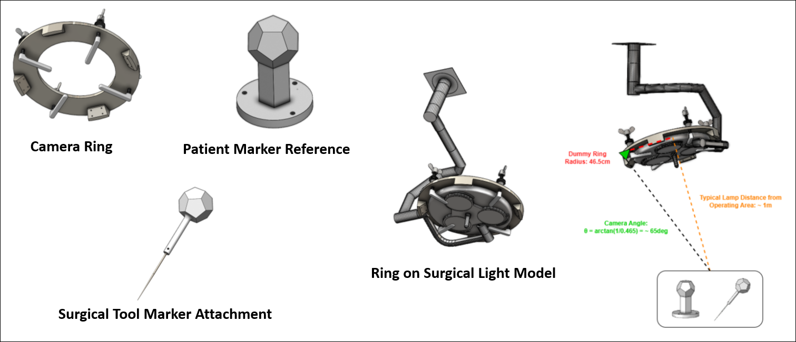
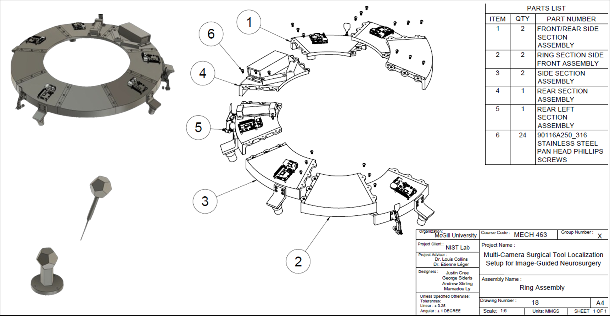

During my Bachelor's capstone project, my team partnered with the Neuro-Imaging and Surgical Technologies Lab (NIST) at McGill, to develop a multi-camera object tracking system. State of the art neuronavigated surgeries require expensive infrared stereo cameras, which are prone to occlusion in the operating room (OR). To solve this, my capstone group designed a mutli-camera ring fixture that can be overlayed on top of surgical lamps in the OR. Moreover, we built a custom optical algorithm to fuse the information from each camera, allowing for numerous cameras to be occluded while still allowing tracking. Currently, neuronavigated surgeries are prohibitively expensive, meaning that very few Canadian hospitals are able to offer this type of lifesaving operation. Our capstone project placed 2nd among competing teams, providing us funding to transition into the startup OPSIS.
Fixture was a 3D printed circle, with 5 camera fixtures. The surgical pointer, and reference were 3D printed dodecahedrones, maximizing the amount of planar space to fit ArUco markers used in the optical tracking software. On top of the camera ring were 5 Raspberry Pi's with a power source, and network switch to carry all 5 Raspberry Pi RGB camera feeds to the local computer.
 To fuse the camera measurements, we extracted detected ArUco markers from the image and computed the pose of the pointer and reference by solving a Perspective-n-Point (PnP) problem. Then we came up with a constant velocity motion model on the SO(3) Lie group. From here we designed an adaptive extended Kalman filter, that fused each camera's pose measurement as it became available. Current estimate error is on the order of 1mm which is similar to the performance reached of traditional IR cameras.